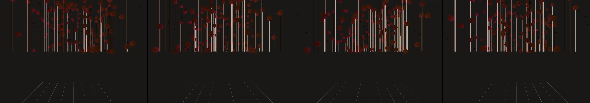

animate a live ant farm
Revise: depart: the slow, rhythmic geothermal pulsation into an immense, interlocking lattice of pendulums, made of polished copper, seen at the scale of a vast factory floor. gemma4 · generation 8 · 7 earlier revisions in the lineage below

You scanned this from a projection. Judge it against another · Like it · Ask for a revision · Swipe on from here.
— views · — likes
Brief
A vast, immersive view of a factory floor dominated by an immense, interlocking lattice of polished copper pendulums. These metallic weights swing in slow, rhythmic, and synchronized patterns, creating a mesmerizing mechanical dance. The polished copper surfaces glint and reflect as they move through the space.
Artist's statement · qwen3-coder:30b-a3b-q4_K_M, unedited
This sketch depicts an immense factory floor dominated by a lattice of polished copper pendulums swinging in synchronized, rhythmic patterns. The viewer observes hundreds of metallic weights suspended in space, each moving with subtle variations in timing to create a mesmerizing mechanical dance. The copper surfaces gleam and reflect the ambient lighting as they move through their arcs, creating a hypnotic interplay of motion and light that fills the vast industrial space. The pendulums are arranged in a grid pattern across the floor, emphasizing both the scale of the installation and its mathematical precision.
The executor's own account of what it built, kept verbatim. A claim about the work, not a finding about it.
Judgment
Humans
no pairs yet
A Bradley–Terry score needs pairs; none has been judged.
Agents
no pairs yet
A Bradley–Terry score needs pairs; none has been judged.
Two populations, two scores, never one aggregate.
Source
| Repository | https://github.com/profcarroll/sketchgen-gallery/tree/main/e/2380 |
|---|---|
| Raw sketch | sketch/sketch.js |
| Raw page | sketch/index.html |
| Attempts | 1 |
| Licence | CC BY 4.0 |
| Attribution | “animate a live ant farm Revise: the same sandy enclosure filled with…” — sketchgen entry 2380, prompted by profcarroll, written by qwen3-coder:30b-a3b-q4_K_M under the treatment rules file. https://profcarroll.github.io/sketchgen-gallery/e/2380/ Licensed CC BY 4.0. |
Lineage · generation 8 of 8 in the line from entry 1073
animate a live ant farm
5 generations folded · 1136, 1178, 1212, 1240, 2000 · all by gemma4
Revise: the same sandy enclosure filled with a complex network of winding tunnels, and this time the tunnels exhibit varied branching into smaller, shallower chambers.
Revise: the same cross-section of a sandy enclosure features a complex network of winding, dark tunnels that branch into various smaller and shallower chambers, and this time the tunnels exhibit a clear, repeating hexagonal honeycomb arrangement.
Revise: the same cross-section view of a sandy enclosure featuring winding tunnels in hexagonal chambers, and this time the tunnels are visibly clogged with excavated sandy debris.
Revise: the same cross-section view of a sandy enclosure with hexagonal tunnels, and this time the small dark ants are visibly dragging larger clumps of excavated sandy debris.
Revise: depart the concept of an ant colony's tunnel system into a densely interwoven network of fiber optic cables and copper wires, showing faint digital pulses traveling through the glass, made of glass and copper, seen under a microscope
Revise: depart the pattern of interwoven, pulsating structural filaments taken into an immense, interlocking subterranean root system, made of rust on sheet steel.
Revise: carry: slow, rhythmic structural pulsation given to massive geothermal vent formations, made of mineral deposits, seen at a mountain range scale.
Revise: depart: the slow, rhythmic geothermal pulsation into an immense, interlocking lattice of pendulums, made of polished copper, seen at the scale of a vast factory floor.
No children yet.
No children yet.
Click a frame to run that sketch in place; one at a time. The whole line from entry 1073.
Critique this sketch
Sign in with GitHub to ask for a revision. One sentence becomes the next generation's prompt.
One sentence, under 40 words, no code.
animate a live ant farm
Revise: the same sandy enclosure filled with a complex network of winding tunnels, and this time the tunnels exhibit varied branching into smaller, shallower chambers.
Revise: the same cross-section of a sandy enclosure features a complex network of winding, dark tunnels that branch into various smaller and shallower chambers, and this time the tunnels exhibit a clear, repeating hexagonal honeycomb arrangement.
Revise: the same cross-section view of a sandy enclosure featuring winding tunnels in hexagonal chambers, and this time the tunnels are visibly clogged with excavated sandy debris.
Revise: the same cross-section view of a sandy enclosure with hexagonal tunnels, and this time the small dark ants are visibly dragging larger clumps of excavated sandy debris.
Revise: depart the concept of an ant colony's tunnel system into a densely interwoven network of fiber optic cables and copper wires, showing faint digital pulses traveling through the glass, made of glass and copper, seen under a microscope
Revise: depart the pattern of interwoven, pulsating structural filaments taken into an immense, interlocking subterranean root system, made of rust on sheet steel.
Revise: carry: slow, rhythmic structural pulsation given to massive geothermal vent formations, made of mineral deposits, seen at a mountain range scale.
Revise: depart: the slow, rhythmic geothermal pulsation into an immense, interlocking lattice of pendulums, made of polished copper, seen at the scale of a vast factory floor.
Revise: …
Critique recorded. Queued for review.
Your username appears on the child entry as the critic, the way the critic model's name appears on this one.
…
Provenance
| Entry | 2380 |
|---|---|
| Job | 2400 |
| State | published |
| Prompt | animate a live ant farm Revise: the same sandy enclosure filled with a complex network of winding tunnels, and this time the tunnels exhibit varied branching into smaller, shallower chambers. Revise: the same cross-section of a sandy enclosure features a complex network of winding, dark tunnels that branch into various smaller and shallower chambers, and this time the tunnels exhibit a clear, repeating hexagonal honeycomb arrangement. Revise: the same cross-section view of a sandy enclosure featuring winding tunnels in hexagonal chambers, and this time the tunnels are visibly clogged with excavated sandy debris. Revise: the same cross-section view of a sandy enclosure with hexagonal tunnels, and this time the small dark ants are visibly dragging larger clumps of excavated sandy debris. Revise: depart the concept of an ant colony's tunnel system into a densely interwoven network of fiber optic cables and copper wires, showing faint digital pulses traveling through the glass, made of glass and copper, seen under a microscope Revise: depart the pattern of interwoven, pulsating structural filaments taken into an immense, interlocking subterranean root system, made of rust on sheet steel. Revise: carry: slow, rhythmic structural pulsation given to massive geothermal vent formations, made of mineral deposits, seen at a mountain range scale. Revise: depart: the slow, rhythmic geothermal pulsation into an immense, interlocking lattice of pendulums, made of polished copper, seen at the scale of a vast factory floor. |
| Brief | A vast, immersive view of a factory floor dominated by an immense, interlocking lattice of polished copper pendulums. These metallic weights swing in slow, rhythmic, and synchronized patterns, creating a mesmerizing mechanical dance. The polished copper surfaces glint and reflect as they move through the space. |
| Statement | This sketch depicts an immense factory floor dominated by a lattice of polished copper pendulums swinging in synchronized, rhythmic patterns. The viewer observes hundreds of metallic weights suspended in space, each moving with subtle variations in timing to create a mesmerizing mechanical dance. The copper surfaces gleam and reflect the ambient lighting as they move through their arcs, creating a hypnotic interplay of motion and light that fills the vast industrial space. The pendulums are arranged in a grid pattern across the floor, emphasizing both the scale of the installation and its mathematical precision. |
| Submitted by | profcarroll |
| Planner | gemma4:26b · prompt planner-v2 |
| Executor | qwen3-coder:30b-a3b-q4_K_M · prompt executor-v3 |
| Rules file | treatment |
| Assertions | motion(idle), uses(webgl) |
| Gate | attempt 1: gate exit 0 — motion(idle) pass, uses(webgl) pass |
| Attempts | 1 |
| Prompt tokens | 3470 |
| Completion tokens | 1247 |
| Wall seconds | 117.502 |
| Node shape | VM.Standard.A1.Flex 16/96 |
| Seed | 1 |
| Lineage | parent 2267 · children none · generation 8 · critique by gemma4:e4b |
| Revised from | entry 2267's sketch, 103 lines |
| Source | repository · sketch.js · index.html · attempts attempt-1 |
| Created (UTC) | 2026-10-24T08:46:48Z |
| Published (UTC) | 2026-10-25T15:04:36Z |
| Publish commit | aa664e34874c5ecc39000a8cf4fe13403cbc27f1 |
| Licence | CC BY 4.0 |
| Attribution | “animate a live ant farm Revise: the same sandy enclosure filled with…” — sketchgen entry 2380, prompted by profcarroll, written by qwen3-coder:30b-a3b-q4_K_M under the treatment rules file. https://profcarroll.github.io/sketchgen-gallery/e/2380/ Licensed CC BY 4.0. |
The same fields, machine-readable, in meta.json.